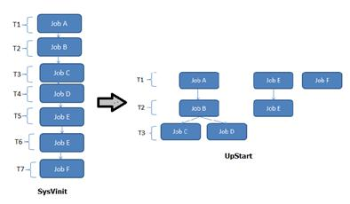
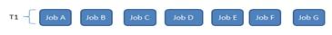
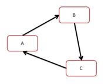

在 IBM Bluemix 云平台上开发并部署您的下一个应用。
Systemd 的简介和特点
Systemd 是 Linux 系统中最新的初始化系统（init），它主要的设计目标是克服 sysvinit 固有的缺点，提高系统的启动速度。systemd 和 ubuntu 的 upstart 是竞争对手，预计会取代 UpStart，实际上在作者写作本文时，已经有消息称 Ubuntu 也将采用 systemd 作为其标准的系统初始化系统。
Systemd 的很多概念来源于苹果 Mac OS 操作系统上的 launchd，不过 launchd 专用于苹果系统，因此长期未能获得应有的广泛关注。Systemd 借鉴了很多 launchd 的思想，它的重要特性如下：
同 SysVinit 和 LSB init scripts 兼容
Systemd 是一个"新来的"，Linux 上的很多应用程序并没有来得及为它做相应的改变。和 UpStart 一样，systemd 引入了新的配置方式，对应用程序的开发也有一些新的要求。如果 systemd 想替代目前正在运行的初始化系统，就必须和现有程序兼容。任何一个 Linux 发行版都很难为了采用 systemd 而在短时间内将所有的服务代码都修改一遍。
Systemd 提供了和 Sysvinit 以及 LSB initscripts 兼容的特性。系统中已经存在的服务和进程无需修改。这降低了系统向 systemd 迁移的成本，使得 systemd 替换现有初始化系统成为可能。
更快的启动速度
Systemd 提供了比 UpStart 更激进的并行启动能力，采用了 socket / D-Bus activation 等技术启动服务。一个显而易见的结果就是：更快的启动速度。
为了减少系统启动时间，systemd 的目标是：
- 尽可能启动更少的进程
- 尽可能将更多进程并行启动
同样地，UpStart 也试图实现这两个目标。UpStart 采用事件驱动机制，服务可以暂不启动，当需要的时候才通过事件触发其启动，这符合第一个设计目标；此外，不相干的服务可以并行启动，这也实现了第二个目标。
下面的图形演示了 UpStart 相对于 SysVInit 在并发启动这个方面的改进：
图 1. UpStart 对 SysVinit 的改进
假设有 7 个不同的启动项目， 比如 JobA、Job B 等等。在 SysVInit 中，每一个启动项目都由一个独立的脚本负责，它们由 sysVinit 顺序地，串行地调用。因此总的启动时间为 T1+T2+T3+T4+T5+T6+T7。其中一些任务有依赖关系，比如 A,B,C,D。
而 Job E 和 F 却和 A,B,C,D 无关。这种情况下，UpStart 能够并发地运行任务{E，F，(A,B,C,D)}，使得总的启动时间减少为 T1+T2+T3。
这无疑增加了系统启动的并行性，从而提高了系统启动速度。但是在 UpStart 中，有依赖关系的服务还是必须先后启动。比如任务 A,B,(C,D)因为存在依赖关系，所以在这个局部，还是串行执行。
让我们例举一些例子， Avahi 服务需要 D-Bus 提供的功能，因此 Avahi 的启动依赖于 D-Bus，UpStart 中，Avahi 必须等到 D-Bus 启动就绪之后才开始启动。类似的，livirtd 和 X11 都需要 HAL 服务先启动，而所有这些服务都需要 syslog 服务记录日志，因此它们都必须等待 syslog 服务先启动起来。然而 httpd 和他们都没有关系，因此 httpd 可以和 Avahi 等服务并发启动。
Systemd 能够更进一步提高并发性，即便对于那些 UpStart 认为存在相互依赖而必须串行的服务，比如 Avahi 和 D-Bus 也可以并发启动。从而实现如下图所示的并发启动过程：
图 2. systemd 的并发启动
所有的任务都同时并发执行，总的启动时间被进一步降低为 T1。
可见 systemd 比 UpStart 更进一步提高了并行启动能力，极大地加速了系统启动时间。
systemd 提供按需启动能力
当 sysvinit 系统初始化的时候，它会将所有可能用到的后台服务进程全部启动运行。并且系统必须等待所有的服务都启动就绪之后，才允许用户登录。这种做法有两个缺点：首先是启动时间过长；其次是系统资源浪费。
某些服务很可能在很长一段时间内，甚至整个服务器运行期间都没有被使用过。比如 CUPS，打印服务在多数服务器上很少被真正使用到。您可能没有想到，在很多服务器上 SSHD 也是很少被真正访问到的。花费在启动这些服务上的时间是不必要的；同样，花费在这些服务上的系统资源也是一种浪费。
Systemd 可以提供按需启动的能力，只有在某个服务被真正请求的时候才启动它。当该服务结束，systemd 可以关闭它，等待下次需要时再次启动它。
Systemd 采用 Linux 的 Cgroup 特性跟踪和管理进程的生命周期
init 系统的一个重要职责就是负责跟踪和管理服务进程的生命周期。它不仅可以启动一个服务，也必须也能够停止服务。这看上去没有什么特别的，然而在真正用代码实现的时候，您或许会发现停止服务比一开始想的要困难。
服务进程一般都会作为精灵进程（daemon）在后台运行，为此服务程序有时候会派生(fork)两次。在 UpStart 中，需要在配置文件中正确地配置 expect 小节。这样 UpStart 通过对 fork 系统调用进行计数，从而获知真正的精灵进程的 PID 号。比如图 3 所示的例子：
图 3. 找到正确 pid

如果 UpStart 找错了，将 p1`作为服务进程的 Pid，那么停止服务的时候，UpStart 会试图杀死 p1`进程，而真正的 p1``进程则继续执行。换句话说该服务就失去控制了。
还有更加特殊的情况。比如，一个 CGI 程序会派生两次，从而脱离了和 Apache 的父子关系。当 Apache 进程被停止后，该 CGI 程序还在继续运行。而我们希望服务停止后，所有由它所启动的相关进程也被停止。
为了处理这类问题，UpStart 通过 strace 来跟踪 fork、exit 等系统调用，但是这种方法很笨拙，且缺乏可扩展性。systemd 则利用了 Linux 内核的特性即 CGroup 来完成跟踪的任务。当停止服务时，通过查询 CGroup，systemd 可以确保找到所有的相关进程，从而干净地停止服务。
CGroup 已经出现了很久，它主要用来实现系统资源配额管理。CGroup 提供了类似文件系统的接口，使用方便。当进程创建子进程时，子进程会继承父进程的 CGroup。因此无论服务如何启动新的子进程，所有的这些相关进程都会属于同一个 CGroup，systemd 只需要简单地遍历指定的 CGroup 即可正确地找到所有的相关进程，将它们一一停止即可。
启动挂载点和自动挂载的管理
传统的 Linux 系统中，用户可以用/etc/fstab 文件来维护固定的文件系统挂载点。这些挂载点在系统启动过程中被自动挂载，一旦启动过程结束，这些挂载点就会确保存在。这些挂载点都是对系统运行至关重要的文件系统，比如 HOME 目录。和 sysvinit 一样，Systemd 管理这些挂载点，以便能够在系统启动时自动挂载它们。Systemd 还兼容/etc/fstab 文件，您可以继续使用该文件管理挂载点。
有时候用户还需要动态挂载点，比如打算访问 DVD 内容时，才临时执行挂载以便访问其中的内容，而不访问光盘时该挂载点被取消(umount)，以便节约资源。传统地，人们依赖 autofs 服务来实现这种功能。
Systemd 内建了自动挂载服务，无需另外安装 autofs 服务，可以直接使用 systemd 提供的自动挂载管理能力来实现 autofs 的功能。
实现事务性依赖关系管理
系统启动过程是由很多的独立工作共同组成的，这些工作之间可能存在依赖关系，比如挂载一个 NFS 文件系统必须依赖网络能够正常工作。Systemd 虽然能够最大限度地并发执行很多有依赖关系的工作，但是类似"挂载 NFS"和"启动网络"这样的工作还是存在天生的先后依赖关系，无法并发执行。对于这些任务，systemd 维护一个"事务一致性"的概念，保证所有相关的服务都可以正常启动而不会出现互相依赖，以至于死锁的情况。
能够对系统进行快照和恢复
systemd 支持按需启动，因此系统的运行状态是动态变化的，人们无法准确地知道系统当前运行了哪些服务。Systemd 快照提供了一种将当前系统运行状态保存并恢复的能力。
比如系统当前正运行服务 A 和 B，可以用 systemd 命令行对当前系统运行状况创建快照。然后将进程 A 停止，或者做其他的任意的对系统的改变，比如启动新的进程 C。在这些改变之后，运行 systemd 的快照恢复命令，就可立即将系统恢复到快照时刻的状态，即只有服务 A，B 在运行。一个可能的应用场景是调试：比如服务器出现一些异常，为了调试用户将当前状态保存为快照，然后可以进行任意的操作，比如停止服务等等。等调试结束，恢复快照即可。
这个快照功能目前在 systemd 中并不完善，似乎开发人员也没有特别关注它，因此有报告指出它还存在一些使用上的问题，使用时尚需慎重。
日志服务
systemd 自带日志服务 journald，该日志服务的设计初衷是克服现有的 syslog 服务的缺点。比如：
- syslog 不安全，消息的内容无法验证。每一个本地进程都可以声称自己是 Apache PID 4711，而 syslog 也就相信并保存到磁盘上。
- 数据没有严格的格式，非常随意。自动化的日志分析器需要分析人类语言字符串来识别消息。一方面此类分析困难低效；此外日志格式的变化会导致分析代码需要更新甚至重写。
Systemd Journal 用二进制格式保存所有日志信息，用户使用 journalctl 命令来查看日志信息。无需自己编写复杂脆弱的字符串分析处理程序。
Systemd Journal 的优点如下：
- 简单性：代码少，依赖少，抽象开销最小。
- 零维护：日志是除错和监控系统的核心功能，因此它自己不能再产生问题。举例说，自动管理磁盘空间，避免由于日志的不断产生而将磁盘空间耗尽。
- 移植性：日志 文件应该在所有类型的 Linux 系统上可用，无论它使用的何种 CPU 或者字节序。
- 性能：添加和浏览 日志 非常快。
- 最小资源占用：日志 数据文件需要较小。
- 统一化：各种不同的日志存储技术应该统一起来，将所有的可记录事件保存在同一个数据存储中。所以日志内容的全局上下文都会被保存并且可供日后查询。例如一条固件记录后通常会跟随一条内核记录，最终还会有一条用户态记录。重要的是当保存到硬盘上时这三者之间的关系不会丢失。Syslog 将不同的信息保存到不同的文件中，分析的时候很难确定哪些条目是相关的。
- 扩展性：日志的适用范围很广，从嵌入式设备到超级计算机集群都可以满足需求。
- 安全性：日志 文件是可以验证的，让无法检测的修改不再可能。
Systemd 的基本概念
单元的概念
系统初始化需要做的事情非常多。需要启动后台服务，比如启动 SSHD 服务；需要做配置工作，比如挂载文件系统。这个过程中的每一步都被 systemd 抽象为一个配置单元，即 unit。可以认为一个服务是一个配置单元；一个挂载点是一个配置单元；一个交换分区的配置是一个配置单元；等等。systemd 将配置单元归纳为以下一些不同的类型。然而，systemd 正在快速发展，新功能不断增加。所以配置单元类型可能在不久的将来继续增加。
- service ：代表一个后台服务进程，比如 mysqld。这是最常用的一类。
- socket ：此类配置单元封装系统和互联网中的一个 套接字 。当下，systemd 支持流式、数据报和连续包的 AF_INET、AF_INET6、AF_UNIX socket 。每一个套接字配置单元都有一个相应的服务配置单元 。相应的服务在第一个"连接"进入套接字时就会启动(例如：nscd.socket 在有新连接后便启动 nscd.service)。
- device ：此类配置单元封装一个存在于 Linux 设备树中的设备。每一个使用 udev 规则标记的设备都将会在 systemd 中作为一个设备配置单元出现。
- mount ：此类配置单元封装文件系统结构层次中的一个挂载点。Systemd 将对这个挂载点进行监控和管理。比如可以在启动时自动将其挂载；可以在某些条件下自动卸载。Systemd 会将/etc/fstab 中的条目都转换为挂载点，并在开机时处理。
- automount ：此类配置单元封装系统结构层次中的一个自挂载点。每一个自挂载配置单元对应一个挂载配置单元 ，当该自动挂载点被访问时，systemd 执行挂载点中定义的挂载行为。
- swap: 和挂载配置单元类似，交换配置单元用来管理交换分区。用户可以用交换配置单元来定义系统中的交换分区，可以让这些交换分区在启动时被激活。
- target ：此类配置单元为其他配置单元进行逻辑分组。它们本身实际上并不做什么，只是引用其他配置单元而已。这样便可以对配置单元做一个统一的控制。这样就可以实现大家都已经非常熟悉的运行级别概念。比如想让系统进入图形化模式，需要运行许多服务和配置命令，这些操作都由一个个的配置单元表示，将所有这些配置单元组合为一个目标(target)，就表示需要将这些配置单元全部执行一遍以便进入目标所代表的系统运行状态。 (例如：multi-user.target 相当于在传统使用 SysV 的系统中运行级别 5)
- timer：定时器配置单元用来定时触发用户定义的操作，这类配置单元取代了 atd、crond 等传统的定时服务。
- snapshot ：与 target 配置单元相似，快照是一组配置单元。它保存了系统当前的运行状态。
每个配置单元都有一个对应的配置文件，系统管理员的任务就是编写和维护这些不同的配置文件，比如一个 MySQL 服务对应一个 mysql.service 文件。这种配置文件的语法非常简单，用户不需要再编写和维护复杂的系统 5 脚本了。
依赖关系
虽然 systemd 将大量的启动工作解除了依赖，使得它们可以并发启动。但还是存在有些任务，它们之间存在天生的依赖，不能用"套接字激活"(socket activation)、D-Bus activation 和 autofs 三大方法来解除依赖（三大方法详情见后续描述）。比如：挂载必须等待挂载点在文件系统中被创建；挂载也必须等待相应的物理设备就绪。为了解决这类依赖问题，systemd 的配置单元之间可以彼此定义依赖关系。
Systemd 用配置单元定义文件中的关键字来描述配置单元之间的依赖关系。比如：unit A 依赖 unit B，可以在 unit B 的定义中用"require A"来表示。这样 systemd 就会保证先启动 A 再启动 B。
Systemd 事务
Systemd 能保证事务完整性。Systemd 的事务概念和数据库中的有所不同，主要是为了保证多个依赖的配置单元之间没有环形引用。比如 unit A、B、C，假如它们的依赖关系为:
图 4, Unit 的循环依赖
存在循环依赖，那么 systemd 将无法启动任意一个服务。此时 systemd 将会尝试解决这个问题，因为配置单元之间的依赖关系有两种：required 是强依赖；want 则是弱依赖，systemd 将去掉 wants 关键字指定的依赖看看是否能打破循环。如果无法修复，systemd 会报错。
Systemd 能够自动检测和修复这类配置错误，极大地减轻了管理员的排错负担。
Target 和运行级别
systemd 用目标（target）替代了运行级别的概念，提供了更大的灵活性，如您可以继承一个已有的目标，并添加其它服务，来创建自己的目标。下表列举了 systemd 下的目标和常见 runlevel 的对应关系：
表 1. Sysvinit 运行级别和 systemd 目标的对应表
| Sysvinit 运行级别 | Systemd 目标 | 备注 |
|---|---|---|
| 0 | runlevel0.target, poweroff.target | 关闭系统。 |
| 1, s, single | runlevel1.target, rescue.target | 单用户模式。 |
| 2, 4 | runlevel2.target, runlevel4.target, multi-user.target | 用户定义/域特定运行级别。默认等同于 3。 |
| 3 | runlevel3.target, multi-user.target | 多用户，非图形化。用户可以通过多个控制台或网络登录。 |
| 5 | runlevel5.target, graphical.target | 多用户，图形化。通常为所有运行级别 3 的服务外加图形化登录。 |
| 6 | runlevel6.target, reboot.target | 重启 |
| emergency | emergency.target | 紧急 Shell |
Systemd 的并发启动原理
如前所述，在 Systemd 中，所有的服务都并发启动，比如 Avahi、D-Bus、livirtd、X11、HAL 可以同时启动。乍一看，这似乎有点儿问题，比如 Avahi 需要 syslog 的服务，Avahi 和 syslog 同时启动，假设 Avahi 的启动比较快，所以 syslog 还没有准备好，可是 Avahi 又需要记录日志，这岂不是会出现问题？
Systemd 的开发人员仔细研究了服务之间相互依赖的本质问题，发现所谓依赖可以分为三个具体的类型，而每一个类型实际上都可以通过相应的技术解除依赖关系。
并发启动原理之一：解决 socket 依赖
绝大多数的服务依赖是套接字依赖。比如服务 A 通过一个套接字端口 S1 提供自己的服务，其他的服务如果需要服务 A，则需要连接 S1。因此如果服务 A 尚未启动，S1 就不存在，其他的服务就会得到启动错误。所以传统地，人们需要先启动服务 A，等待它进入就绪状态，再启动其他需要它的服务。Systemd 认为，只要我们预先把 S1 建立好，那么其他所有的服务就可以同时启动而无需等待服务 A 来创建 S1 了。如果服务 A 尚未启动，那么其他进程向 S1 发送的服务请求实际上会被 Linux 操作系统缓存，其他进程会在这个请求的地方等待。一旦服务 A 启动就绪，就可以立即处理缓存的请求，一切都开始正常运行。
那么服务如何使用由 init 进程创建的套接字呢？
Linux 操作系统有一个特性，当进程调用 fork 或者 exec 创建子进程之后，所有在父进程中被打开的文件句柄 (file descriptor) 都被子进程所继承。套接字也是一种文件句柄，进程 A 可以创建一个套接字，此后当进程 A 调用 exec 启动一个新的子进程时，只要确保该套接字的 close_on_exec 标志位被清空，那么新的子进程就可以继承这个套接字。子进程看到的套接字和父进程创建的套接字是同一个系统套接字，就仿佛这个套接字是子进程自己创建的一样，没有任何区别。
这个特性以前被一个叫做 inetd 的系统服务所利用。Inetd 进程会负责监控一些常用套接字端口，比如 Telnet，当该端口有连接请求时，inetd 才启动 telnetd 进程，并把有连接的套接字传递给新的 telnetd 进程进行处理。这样，当系统没有 telnet 客户端连接时，就不需要启动 telnetd 进程。Inetd 可以代理很多的网络服务，这样就可以节约很多的系统负载和内存资源，只有当有真正的连接请求时才启动相应服务，并把套接字传递给相应的服务进程。
和 inetd 类似，systemd 是所有其他进程的父进程，它可以先建立所有需要的套接字，然后在调用 exec 的时候将该套接字传递给新的服务进程，而新进程直接使用该套接字进行服务即可。
并发启动原理之二：解决 D-Bus 依赖
D-Bus 是 desktop-bus 的简称，是一个低延迟、低开销、高可用性的进程间通信机制。它越来越多地用于应用程序之间通信，也用于应用程序和操作系统内核之间的通信。很多现代的服务进程都使用D-Bus 取代套接字作为进程间通信机制，对外提供服务。比如简化 Linux 网络配置的 NetworkManager 服务就使用 D-Bus 和其他的应用程序或者服务进行交互：邮件客户端软件 evolution 可以通过 D-Bus 从 NetworkManager 服务获取网络状态的改变，以便做出相应的处理。
D-Bus 支持所谓"bus activation"功能。如果服务 A 需要使用服务 B 的 D-Bus 服务，而服务 B 并没有运行，则 D-Bus 可以在服务 A 请求服务 B 的 D-Bus 时自动启动服务 B。而服务 A 发出的请求会被 D-Bus 缓存，服务 A 会等待服务 B 启动就绪。利用这个特性，依赖 D-Bus 的服务就可以实现并行启动。
并发启动原理之三：解决文件系统依赖
系统启动过程中，文件系统相关的活动是最耗时的，比如挂载文件系统，对文件系统进行磁盘检查（fsck），磁盘配额检查等都是非常耗时的操作。在等待这些工作完成的同时，系统处于空闲状态。那些想使用文件系统的服务似乎必须等待文件系统初始化完成才可以启动。但是 systemd 发现这种依赖也是可以避免的。
Systemd 参考了 autofs 的设计思路，使得依赖文件系统的服务和文件系统本身初始化两者可以并发工作。autofs 可以监测到某个文件系统挂载点真正被访问到的时候才触发挂载操作，这是通过内核 automounter 模块的支持而实现的。比如一个 open()系统调用作用在"/misc/cd/file1"的时候，/misc/cd 尚未执行挂载操作，此时 open()调用被挂起等待，Linux 内核通知 autofs，autofs 执行挂载。这时候，控制权返回给 open()系统调用，并正常打开文件。
Systemd 集成了 autofs 的实现，对于系统中的挂载点，比如/home，当系统启动的时候，systemd 为其创建一个临时的自动挂载点。在这个时刻/home 真正的挂载设备尚未启动好，真正的挂载操作还没有执行，文件系统检测也还没有完成。可是那些依赖该目录的进程已经可以并发启动，他们的 open()操作被内建在 systemd 中的 autofs 捕获，将该 open()调用挂起（可中断睡眠状态）。然后等待真正的挂载操作完成，文件系统检测也完成后，systemd 将该自动挂载点替换为真正的挂载点，并让 open()调用返回。由此，实现了那些依赖于文件系统的服务和文件系统本身同时并发启动。
当然对于"/"根目录的依赖实际上一定还是要串行执行，因为 systemd 自己也存放在/之下，必须等待系统根目录挂载检查好。
不过对于类似/home 等挂载点，这种并发可以提高系统的启动速度，尤其是当/home 是远程的 NFS 节点，或者是加密盘等，需要耗费较长的时间才可以准备就绪的情况下，因为并发启动，这段时间内，系统并不是完全无事可做，而是可以利用这段空余时间做更多的启动进程的事情，总的来说就缩短了系统启动时间。
Systemd 的使用
下面针对技术人员的不同角色来简单地介绍一下 systemd 的使用。本文只打算给出简单的描述，让您对 systemd 的使用有一个大概的理解。具体的细节内容太多，即无法在一篇短文内写全，本人也没有那么强大的能力。还需要读者自己去进一步查阅 systemd 的文档。
系统软件开发人员
开发人员需要了解 systemd 的更多细节。比如您打算开发一个新的系统服务，就必须了解如何让这个服务能够被 systemd 管理。这需要您注意以下这些要点：
- 后台服务进程代码不需要执行两次派生来实现后台精灵进程，只需要实现服务本身的主循环即可。
- 不要调用 setsid()，交给 systemd 处理
- 不再需要维护 pid 文件。
- Systemd 提供了日志功能，服务进程只需要输出到 stderr 即可，无需使用 syslog。
- 处理信号 SIGTERM，这个信号的唯一正确作用就是停止当前服务，不要做其他的事情。
- SIGHUP 信号的作用是重启服务。
- 需要套接字的服务，不要自己创建套接字，让 systemd 传入套接字。
- 使用 sd_notify()函数通知 systemd 服务自己的状态改变。一般地，当服务初始化结束，进入服务就绪状态时，可以调用它。
Unit 文件的编写
对于开发者来说，工作量最大的部分应该是编写配置单元文件，定义所需要的单元。
举例来说，开发人员开发了一个新的服务程序，比如 httpd，就需要为其编写一个配置单元文件以便该服务可以被 systemd 管理，类似 UpStart 的工作配置文件。在该文件中定义服务启动的命令行语法，以及和其他服务的依赖关系等。
此外我们之前已经了解到，systemd 的功能繁多，不仅用来管理服务，还可以管理挂载点，定义定时任务等。这些工作都是由编辑相应的配置单元文件完成的。我在这里给出几个配置单元文件的例子。
下面是 SSH 服务的配置单元文件，服务配置单元文件以.service 为文件名后缀。
#cat /etc/system/system/sshd.service [Unit] Description=OpenSSH server daemon [Service] EnvironmentFile=/etc/sysconfig/sshd ExecStartPre=/usr/sbin/sshd-keygen ExecStart=/usrsbin/sshd –D $OPTIONS ExecReload=/bin/kill –HUP $MAINPID KillMode=process Restart=on-failure RestartSec=42s [Install] WantedBy=multi-user.target
文件分为三个小节。第一个是[Unit]部分，这里仅仅有一个描述信息。第二部分是 Service 定义，其中，ExecStartPre 定义启动服务之前应该运行的命令；ExecStart 定义启动服务的具体命令行语法。第三部分是[Install]，WangtedBy 表明这个服务是在多用户模式下所需要的。
那我们就来看下 multi-user.target 吧：
#cat multi-user.target [Unit] Description=Multi-User System Documentation=man.systemd.special(7) Requires=basic.target Conflicts=rescue.service rescure.target After=basic.target rescue.service rescue.target AllowIsolate=yes [Install] Alias=default.target
第一部分中的 Requires 定义表明 multi-user.target 启动的时候 basic.target 也必须被启动；另外 basic.target 停止的时候，multi-user.target 也必须停止。如果您接着查看 basic.target 文件，会发现它又指定了 sysinit.target 等其他的单元必须随之启动。同样 sysinit.target 也会包含其他的单元。采用这样的层层链接的结构，最终所有需要支持多用户模式的组件服务都会被初始化启动好。
在[Install]小节中有 Alias 定义，即定义本单元的别名，这样在运行 systemctl 的时候就可以使用这个别名来引用本单元。这里的别名是 default.target，比 multi-user.target 要简单一些。。。
此外在/etc/systemd/system 目录下还可以看到诸如*.wants 的目录，放在该目录下的配置单元文件等同于在[Unit]小节中的 wants 关键字，即本单元启动时，还需要启动这些单元。比如您可以简单地把您自己写的 foo.service 文件放入 multi-user.target.wants 目录下，这样每次都会被默认启动了。
最后，让我们来看看 sys-kernel-debug.mout 文件，这个文件定义了一个文件挂载点：
#cat sys-kernel-debug.mount [Unit] Description=Debug File Syste DefaultDependencies=no ConditionPathExists=/sys/kernel/debug Before=sysinit.target [Mount] What=debugfs Where=/sys/kernel/debug Type=debugfs
这个配置单元文件定义了一个挂载点。挂载配置单元文件有一个[Mount]配置小节，里面配置了 What，Where 和 Type 三个数据项。这都是挂载命令所必须的，例子中的配置等同于下面这个挂载命令：
mount –t debugfs /sys/kernel/debug debugfs
配置单元文件的编写需要很多的学习，必须参考 systemd 附带的 man 等文档进行深入学习。希望通过上面几个小例子，大家已经了解配置单元文件的作用和一般写法了。
系统管理员
systemd 的主要命令行工具是 systemctl。
多数管理员应该都已经非常熟悉系统服务和 init 系统的管理，比如 service、chkconfig 以及 telinit 命令的使用。systemd 也完成同样的管理任务，只是命令工具 systemctl 的语法有所不同而已，因此用表格来对比 systemctl 和传统的系统管理命令会非常清晰。
表 2. Systemd 命令和 sysvinit 命令的对照表
| Sysvinit 命令 | Systemd 命令 | 备注 |
|---|---|---|
| service foo start | systemctl start foo.service | 用来启动一个服务 (并不会重启现有的) |
| service foo stop | systemctl stop foo.service | 用来停止一个服务 (并不会重启现有的)。 |
| service foo restart | systemctl restart foo.service | 用来停止并启动一个服务。 |
| service foo reload | systemctl reload foo.service | 当支持时，重新装载配置文件而不中断等待操作。 |
| service foo condrestart | systemctl condrestart foo.service | 如果服务正在运行那么重启它。 |
| service foo status | systemctl status foo.service | 汇报服务是否正在运行。 |
| ls /etc/rc.d/init.d/ | systemctl list-unit-files --type=service | 用来列出可以启动或停止的服务列表。 |
| chkconfig foo on | systemctl enable foo.service | 在下次启动时或满足其他触发条件时设置服务为启用 |
| chkconfig foo off | systemctl disable foo.service | 在下次启动时或满足其他触发条件时设置服务为禁用 |
| chkconfig foo | systemctl is-enabled foo.service | 用来检查一个服务在当前环境下被配置为启用还是禁用。 |
| chkconfig –list | systemctl list-unit-files --type=service | 输出在各个运行级别下服务的启用和禁用情况 |
| chkconfig foo –list | ls /etc/systemd/system/*.wants/foo.service | 用来列出该服务在哪些运行级别下启用和禁用。 |
| chkconfig foo –add | systemctl daemon-reload | 当您创建新服务文件或者变更设置时使用。 |
| telinit 3 | systemctl isolate multi-user.target (OR systemctl isolate runlevel3.target OR telinit 3) | 改变至多用户运行级别。 |
除了表 2 列出的常见用法，系统管理员还需要了解其他一些系统配置和管理任务的改变。
首先我们了解 systemd 如何处理电源管理，命令如下表所示：
表 3，systemd 电源管理命令
| 命令 | 操作 |
|---|---|
| systemctl reboot | 重启机器 |
| systemctl poweroff | 关机 |
| systemctl suspend | 待机 |
| systemctl hibernate | 休眠 |
| systemctl hybrid-sleep | 混合休眠模式（同时休眠到硬盘并待机） |
关机不是每个登录用户在任何情况下都可以执行的，一般只有管理员才可以关机。正常情况下系统不应该允许 SSH 远程登录的用户执行关机命令。否则其他用户正在工作，一个用户把系统关了就不好了。为了解决这个问题，传统的 Linux 系统使用 ConsoleKit 跟踪用户登录情况，并决定是否赋予其关机的权限。现在 ConsoleKit 已经被 systemd 的 logind 所替代。
logind 不是 pid-1 的 init 进程。它的作用和 UpStart 的 session init 类似，但功能要丰富很多，它能够管理几乎所有用户会话(session)相关的事情。logind 不仅是 ConsoleKit 的替代，它可以：
- 维护，跟踪会话和用户登录情况。如上所述，为了决定关机命令是否可行，系统需要了解当前用户登录情况，如果用户从 SSH 登录，不允许其执行关机命令；如果普通用户从本地登录，且该用户是系统中的唯一会话，则允许其执行关机命令；这些判断都需要 logind 维护所有的用户会话和登录情况。
- Logind 也负责统计用户会话是否长时间没有操作，可以执行休眠/关机等相应操作。
- 为用户会话的所有进程创建 CGroup。这不仅方便统计所有用户会话的相关进程，也可以实现会话级别的系统资源控制。
- 负责电源管理的组合键处理，比如用户按下电源键，将系统切换至睡眠状态。
- 多席位(multi-seat) 管理。如今的电脑，即便一台笔记本电脑，也完全可以提供多人同时使用的计算能力。多席位就是一台电脑主机管理多个外设，比如两个屏幕和两个鼠标/键盘。席位一使用屏幕 1 和键盘 1；席位二使用屏幕 2 和键盘 2，但他们都共享一台主机。用户会话可以自由在多个席位之间切换。或者当插入新的键盘，屏幕等物理外设时，自动启动 gdm 用户登录界面等。所有这些都是多席位管理的内容。ConsoleKit 始终没有实现这个功能，systemd 的 logind 能够支持多席位。
以上描述的这些管理功能仅仅是 systemd 的部分功能，除此之外，systemd 还负责系统其他的管理配置，比如配置网络，Locale 管理，管理系统内核模块加载等，完整地描述它们已经超出了本人的能力。
systemd 小结
在不才作者看来，作为系统初始化系统，systemd 的最大特点有两个：
- 令人惊奇的激进的并发启动能力，极大地提高了系统启动速度；
- 用 CGroup 统计跟踪子进程，干净可靠。
此外，和其前任不同的地方在于，systemd 已经不仅仅是一个初始化系统了。
Systemd 出色地替代了 sysvinit 的所有功能，但它并未就此自满。因为 init 进程是系统所有进程的父进程这样的特殊性，systemd 非常适合提供曾经由其他服务提供的功能，比如定时任务 (以前由 crond 完成) ；会话管理 (以前由 ConsoleKit/PolKit 等管理) 。仅仅从本文皮毛一样的介绍来看，Systemd 已经管得很多了，可它还在不断发展。它将逐渐成为一个多功能的系统环境，能够处理非常多的系统管理任务，有人甚至将它看作一个操作系统。
好的一点是，这非常有助于标准化 Linux 的管理！从前，不同的 Linux 发行版各行其事，使用不同方法管理系统，从来也不会互相妥协。比如如何将系统进入休眠状态，不同的系统有不同的解决方案，即便是同一个 Linux 系统，也存在不同的方法，比如一个有趣的讨论：如何让 ubuntu 系统休眠，可以使用底层的/sys/power/state 接口，也可以使用诸如 pm-utility 等高层接口。存在这么多种不同的方法做一件事情对像我这样的普通用户而言可不是件有趣的事情。systemd 提供统一的电源管理命令接口，这件事情的意义就类似全世界的人都说统一的语言，我们再也不需要学习外语了，多么美好！
如果所有的 Linux 发行版都采纳了 systemd，那么系统管理任务便可以很大程度上实现标准化。此外 systemd 有个很棒的承诺：接口保持稳定，不会再轻易改动。对于软件开发人员来说，这是多么体贴又让人感动的承诺啊！
结束语
本系列文章从古老却简明稳定的 sysvinit 说起，接着简要描述了 UpStart 带来的清新改变，最后看到了充满野心和活力的新生代 systemd 系统逐渐统治 Linux 的各个版本。就好像在看我们这个世界，一代人老去，新的一代带着横扫一切的气概登上舞台，还没有喊出他们最有力的口号，更猛的一代已经把聚光灯和所有的目光带走。Systemd 之后也许还有更新的 init 系统出现吧，让我们继续期待。。。
参考资料
学习
- 网络文章 高速启动，现在开始 systemd，对 systemd 的功能点有很清晰的总结
- Fedora 项目中 关于 systemd 的官方文档，有对 systemd 最详细的描述，也是查询 systemd 细节,man page 等开发信息的较好资料。
- 维基百科上 init 系统的条目对 init 进程有简略却精确的介绍。
- IBM developerWorks 上的文章 使用 D-BUS 连接桌面应用程序对 D-Bus 有很好的介绍。
- LinuxToy 网站上的文章 systemd journal，详细讲解了 syslogd 的缺点和 systemd 的日志系统。
- 在 developerWorks Linux 专区寻找为 Linux 开发人员（包括 Linux 新手入门）准备的更多参考资料。
讨论
- 加入 developerWorks 中文社区。查看开发人员推动的博客、论坛、组和维基，并与其他 developerWorks 用户交流。
条评论


IBM Bluemix 资源中心
文章、教程、演示，帮助您构建、部署和管理云应用。

developerWorks 中文社区
立即加入来自 IBM 的专业 IT 社交网络。

Bluemixathon 挑战赛
为灾难恢复构建应用，赢取现金大奖。
请 登录 或 注册 后发表评论。
注意：评论中不支持 HTML 语法